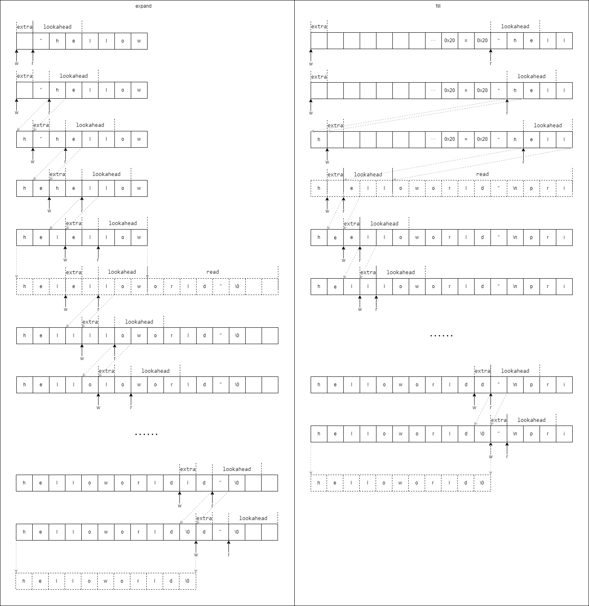

输入流缓冲区 candy 为了节省内存, 对脚本语言输入流的控制进行了长期的迭代. 所有设计思路的核心是, 对输入流的读取操作会产生空闲内存, 这些空闲内存可以用于写入临时数据. 这个思路可以看成是一种环形缓冲区的变体, 读写操作共用同一段内存区域, 此消彼长.
最开始的设计期望对字符串输入和文件输入这两种输入形式作抽象, 笔者参考 lua 设计了candy_reader_t函数指针对输入流进行控制, 这样做的好处是词法分析器不用关注输入流的具体形式. 这个策略沿用至今.
首次引入candy_reader_t在这个提交中 , 当时将对输入流缓冲区的读写操作做了封装, 这个模块叫做candy_io_t.
1 2 3 4 5 6 7 8 9 10 11 12 13 14 15 16 17 18 19 20 21 22 23 24 25 26 27 28 char candy_io_view (candy_io_t *self, int idx) { assert(idx < CANDY_IO_LOOKAHEAD_SIZE); return self->buffer[self->r + idx]; } char candy_io_read (candy_io_t *self) { if (self->r + CANDY_IO_LOOKAHEAD_SIZE == self->size) { char ahead[CANDY_IO_LOOKAHEAD_SIZE]; memcpy (ahead, self->buffer + self->r, CANDY_IO_LOOKAHEAD_SIZE); self->reader(self->buffer + self->w + CANDY_IO_LOOKAHEAD_SIZE, self->size - self->w - CANDY_IO_LOOKAHEAD_SIZE, self->ud); memcpy (self->buffer + self->w, ahead, CANDY_IO_LOOKAHEAD_SIZE); self->r = self->w; } return self->buffer[self->r++]; } void candy_io_write (candy_io_t *self, char ch) { self->buffer[self->w++] = ch; if (self->size - self->w < self->size / 2 ) { int size = self->size * 2 ; char *buffer = (char *)calloc (size, sizeof (char )); memcpy (buffer, self->buffer, self->size); self->reader(buffer + self->size, self->size, self->ud); free (self->buffer); self->buffer = buffer; self->size = size; } }
这里有三个业务功能, 一个是观察者view, 它的作用是向前看, 但不会改变缓冲区的读指针; 一个是读取器read, 它的作用是从缓冲区向外读1字节数据, 并移动读指针; 一个是写入器write, 它的作用是向缓冲区写入1字节数据, 并移动写指针. 写入器还负责了另一个功能叫做扩张, 它的功能是在可写入区域不够时扩大缓冲区.
一开始的设计只有一个参数CANDY_IO_LOOKAHEAD_SIZE, 用来描述词法分析器最多可以向前看多少字节. 随后增加了参数 CANDY_IO_DEFAULT_BUFFER_SIZE用来控制扩张缓冲区时的增长率.
但不久后发现设计有缺陷 , 这个提交修复了一个额外写入数据造成”追尾”的问题, 产生这个问题的原因是向写入区域写入了并非来自读取区域的数据(在具体业务逻辑中, 这个额外写入的数据是终止符’\0’, 用来截断字符串), 这造成了额外的写入操作导致尚未读取的数据丢失的问题. 这个问题修复又引入了一个新的参数CANDY_IO_EXTRA_SIZE, 用以描述用户可额外写入的字节数. 至此, 这个算法已经有3个参数了, 但这样做解决了一些问题, 因此这个状况维持了很长时间. 笔者在这个阶段做了一个时序逻辑图描述整个过程的内存布局.

之后发生了一些架构上的调整. 分词器作为脚本语言整个逻辑链条的”前锋”肩负重任, 它需要与用户输入交锋. 此时要把用户当作猴子, 处理一切可能的输入, 用户可能输入的都不是代码, 而是整部哈姆雷特. 这必然要引入错误处理逻辑, 这个功能如同一部时间机器, 如果发生异常, 它能将异常信息存储到指定的内存区域, 然后将现场回滚到意外发生之前, 刚开始执行分词的地方. 最终笔者使用jmpbuf实现了这个功能, 而这就是另一个故事了. 回到分词器上, 当时的设计认为分词器发生异常后, 读写缓冲区的数据就没有用了, 因此可以将所述异常信息放到读写缓冲区里. 这样做之后, 原先的candy_io_t模块就演变成了错误处理模块, 那些输出输出的操作函数则被移到了分词器中. 这个设计看上去没有问题, 但随后的研究发现, 词法分析阶段的错误处理模块只有一个, 但可能会同时存在多个词法分析模块分别执行不同脚本文件的词法分析, 这就需要给每个词法分析器各分配一个独立的缓冲区, 而不是共用错误处理模块的缓冲区. 事实上这样做确实更加合理, 在项目引入垃圾回收器后, 原本错误处理模块的错误数据缓冲区也取消常驻了, 演变成了在发生错误后才会创建.
前文讲到, 在整个分词器迭代的历程中, 逐渐引入了总共3个参数, 除此之外还有几个问题, 例如, 如果输入流不能一次性填满剩余缓冲区, 此时逻辑会异常; reader函数指针在多处调用, 无法统一控制数据流. 为了解决这些问题, 笔者又进行了数次改动.
首先是消除可额外写入的字节数, 解决方法只有一个, 就是不写入额外的字节了, 要求写入缓冲区的数据一定得是从缓冲区读出来的数据. 于是对原先向缓冲区写入终止符的位置作了一些改动, 原本比对写缓冲区的数据是否是保留词的位置用了strcmp之类的方法, 迭代后成了使用 hash 匹配的方式做 token 匹配, 这种设计借鉴了 C++ 的静态表达式能在编译期求值的特性, 在 candy 中增减保留词时用 python 算出所有保留词的 hash 值, 这样运行期就不用比对字串了
1 2 3 4 5 6 7 8 9 10 11 12 13 14 15 16 17 18 19 20 21 22 23 24 25 26 #ifdef CANDY_KW_MATCH #undef CANDY_KW_MATCH #define CANDY_KW(_keyword, _hash) case _hash: return TK_##_keyword; #endif switch (djb_hash(_buff(self), self->buff.w)) {#ifdef CANDY_KW CANDY_KW( true , 0x7C9E9FE5 U) CANDY_KW( false , 0x0F6BCEF0 U) CANDY_KW( none, 0x7C9B47F5 U) CANDY_KW( def, 0x0B8869B4 U) CANDY_KW( return , 0x19306425 U) CANDY_KW( end, 0x0B886F1C U) CANDY_KW( import, 0x04C06F80 U) CANDY_KW( if , 0x00597834 U) CANDY_KW( elif, 0x7C964B25 U) CANDY_KW( else , 0x7C964C6E U) CANDY_KW( while , 0x10A3387E U) CANDY_KW( for , 0x0B88738C U) CANDY_KW( break , 0x0F2C9F4A U) CANDY_KW(continue , 0x42AEFB8A U) CANDY_KW( var, 0x0B88B5CE U) default : return TK_IDENT;} #endif
再是移除向前看的字节数. 这个的实现方法就是不论向前看多少字节, 都自动向缓冲区填值, 保证向前看的位置一定有值就好了. 为此抽象出了fill逻辑, 每次在向前看或读出数据时向缓冲区塞数据就完事了. 这个修改同时也确保了全局只在fill业务中会调用reader读取数据, 保证了输入流的唯一性.
1 2 3 4 5 6 7 8 9 10 11 12 13 14 15 16 17 18 19 20 21 22 23 24 25 26 27 28 29 30 31 32 33 34 35 36 37 38 39 40 static int _fill(candy_lexer_t *self, size_t ahead) { size_t size = _size(self); if (self->buff.r + ahead < size) return 0 ; size_t offset = self->buff.w + ahead; if (size < CANDY_LEXER_EXPAND_SIZE + offset) { candy_vector_append(&self->buff.vec, self->gc, NULL , CANDY_LEXER_EXPAND_SIZE); offset = size; } else { memmove(_buff(self) + self->buff.w, _buff(self) + self->buff.r, ahead); self->buff.r = self->buff.w; } int res = self->buff.reader(_buff(self) + offset, _size(self) - offset, self->buff.arg); lex_assert(res > 0 , "stream error" ); candy_vector_resize(&self->buff.vec, self->gc, offset + res); return res; } static char _view(candy_lexer_t *self, int idx) { while (_fill(self, idx)); return _buff(self)[self->buff.r + idx]; } static char _read(candy_lexer_t *self) { while (_fill(self, 0 )); ++self->dbg.column; return _buff(self)[self->buff.r++]; } static void _save_char(candy_lexer_t *self, char ch) { assert(self->buff.r > self->buff.w); _buff(self)[self->buff.w++] = ch; }
{kind=link}